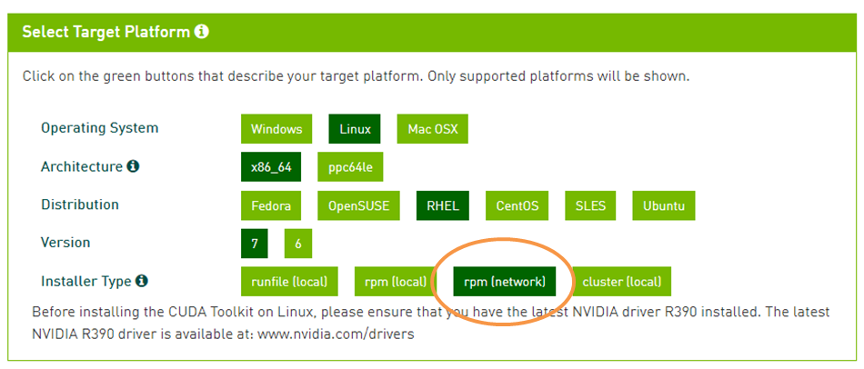
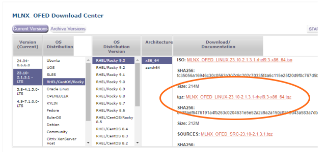

Installation
This chapter introduces the steps to install PG-Strom.
Checklist
- Server Hardware
- It requires generic x86_64 hardware that can run Linux operating system supported by CUDA Toolkit. We have no special requirement for CPU, storage and network devices.
- note002:HW Validation List may help you to choose the hardware.
- GPU Direct SQL Execution needs NVME-SSD devices, or fast network card with RoCE support, and to be installed under the same PCIe Root Complex where GPU is located on.
- GPU Device
- PG-Strom requires at least one GPU device on the system, which is supported by CUDA Toolkit, has computing capability 6.0 (Pascal generation) or later;
- Please check at 002: HW Validation List - List of supported GPU models for GPU selection.
- Operating System
- PG-Strom requires Linux operating system for x86_64 architecture, and its distribution supported by CUDA Toolkit. Our recommendation is Red Hat Enterprise Linux or CentOS version 8.x series.
- GPU Direct SQL Execution (w/ HeteroDB driver) needs Red Hat Enterprise Linux or CentOS version 7.3/8.0 or newer.
- GPU Direct SQL Execution (w/ NVIDIA driver; experimental) needs Red Hat Enterprise Linux or CentOS version 8.3 or newer, and Mellanox OFED (OpenFabrics Enterprise Distribution) driver.
- PostgreSQL
- PG-Strom v3.0 requires PostgreSQL v11 or later.
- Some of PostgreSQL APIs used by PG-Strom internally are not included in the former versions.
- CUDA Toolkit
- PG-Strom requires CUDA Toolkit version 11.4 or later.
- Some of CUDA Driver APIs used by PG-Strom internally are not included in the former versions.
- NVIDIA GPUDirect Storage (GDS) has been included in the CUDA Toolkit version 11.4 or later.
Selection of GPU Direct SQL Execiton drivers
Please consider the software stack for GPUDirect SQL, prior to the installation.
There are two individual Linux kernel driver for GPUDirect SQL execution, as follows:
- HeteroDB NVME-Strom
- The dedicated Linux kernel module, released at 2018, supported since PG-Strom v2.0.
- It supports RHEL7.x/RHEL8.x, enables direct read from local NVME-SSDs to GPU using GPUDirect RDMA.
- NVIDIA GPUDirect Storage
- The general purpose driver stack, has been developed by NVIDIA, to support direct read from NVME/NVME-oF devices to GPU. At May-2021, its public beta revision has been published.
- PG-Strom v3.0 experimentally supports the GPUDirect Storage, that supports RHEL8.3/8.4 and Ubuntu 18.04/20.04.
- Some partners, including HeteroDB, expressed to support this feature. It also allows direct read from shared-filesystems or SDS(Software Defined Storage) devices over NVME-oF protocols.
Here is little performance differences on the above two drivers. On the other hands, GPUDirect Storage has more variations of the supported storages and filesystems, and more mature software QA process, expect for the case of PG-Strom on RHEL7/CentOS7, we will recommend to use GPUDirect Storage driver.
Tips
For RHEL8/CentOS8 or Ubuntu 18.04/20.04, install the software according to the following steps.
- OS Installation
- CUDA Toolkit Installation
heterodb-extramodule installation- No need to install
heterodb-kmod
- No need to install
- MOFED Driver installation
- GPUDirect Storage module installation
- PostgreSQL installation
- PG-Strom installation
- PostGIS installation (on the demand)
For RHEL7/CentOS7, install the software according to the following steps.
- OS Installation
- CUDA Toolkit Installation
heterodb-extramodule installationheterodb-kmodmodule installation- No need to install MOFED Driver and GPUDirect Storage module
- PostgreSQL installation
- PG-Strom installation
- PostGIS installation (on the demand)
OS Installation
Choose a Linux distribution which is supported by CUDA Toolkit, then install the system according to the installation process of the distribution. NVIDIA DEVELOPER ZONE introduces the list of Linux distributions which are supported by CUDA Toolkit.
In case of Red Hat Enterprise Linux 8.x or CentOS 8.x series, choose "Minimal installation" as base environment, and also check the following add-ons.
- Development Tools

Next to the OS installation on the server, go on the package repository configuration to install the third-party packages.
If you didn't check the "Development Tools" at the installer, we can additionally install the software using the command below after the operating system installation.
# dnf groupinstall 'Development Tools'
Tip
If GPU devices installed on the server are too new, it may cause system crash during system boot.
In this case, you may avoid the problem by adding nouveau.modeset=0 onto the kernel boot option, to disable
the inbox graphic driver.
Disables nouveau driver
When the nouveau driver, that is an open source compatible driver for NVIDIA GPUs, is loaded, it prevent to load the nvidia driver. In this case, reboot the operating system after a configuration to disable the nouveau driver.
To disable the nouveau driver, put the following configuration onto /etc/modprobe.d/disable-nouveau.conf, and run dracut command to apply them on the boot image of Linux kernel.
Then, restart the system once.
# cat > /etc/modprobe.d/disable-nouveau.conf <<EOF
blacklist nouveau
options nouveau modeset=0
EOF
# dracut -f
# shutdown -r now
epel-release Installation
Several software modules required by PG-Strom are distributed as a part of EPEL (Extra Packages for Enterprise Linux). You need to add a repository definition of EPEL packages for yum system to obtain these software.
One of the package we will get from EPEL repository is DKMS (Dynamic Kernel Module Support). It is a framework to build Linux kernel module for the running Linux kernel on demand; used for NVIDIA's GPU driver and related. Linux kernel module must be rebuilt according to version-up of Linux kernel, so we don't recommend to operate the system without DKMS.
epel-release package provides the repository definition of EPEL. You can obtain the package from the Fedora Project website.
For CentOS8, it can be installed using dnf command.
-- For RHEL8
# dnf install https://dl.fedoraproject.org/pub/epel/epel-release-latest-8.noarch.rpm
-- For CentOS8
# dnf install epel-release
heterodb-swdc Installation
PG-Strom and related packages are distributed from HeteroDB Software Distribution Center. You need to add a repository definition of HeteroDB-SWDC for you system to obtain these software.
heterodb-swdc package provides the repository definition of HeteroDB-SWDC.
Access to the HeteroDB Software Distribution Center using Web browser, download the heterodb-swdc-1.2-1.el8.noarch.rpm on top of the file list, then install this package.
Once heterodb-swdc package gets installed, yum system configuration is updated to get software from the HeteroDB-SWDC repository.
Install the heterodb-swdc package as follows.
# dnf install https://heterodb.github.io/swdc/yum/rhel8-noarch/heterodb-swdc-1.2-1.el8.noarch.rpm
CUDA Toolkit Installation
This section introduces the installation of CUDA Toolkit. If you already installed the latest CUDA Toolkit, you can skip this section.
NVIDIA offers two approach to install CUDA Toolkit; one is by self-extracting archive (called runfile), and the other is by RPM packages. We recommend RPM installation because it allows simple software updates.
You can download the installation package for CUDA Toolkit from NVIDIA DEVELOPER ZONE. Choose your OS, architecture, distribution and version, then choose "rpm(network)" edition.

Once you choose the "rpm(network)" option, it shows a few step-by-step commands to configure the repository definition and to install the related packages, by RPM installation of CUDA Toolkit over the network.
The example below is the commands for RHEL8/CentOS8.
sudo dnf config-manager --add-repo https://developer.download.nvidia.com/compute/cuda/repos/rhel8/x86_64/cuda-rhel8.repo
sudo dnf clean all
sudo dnf -y module install nvidia-driver:latest-dkms
sudo dnf -y install cuda
Once installation completed successfully, CUDA Toolkit is deployed at /usr/local/cuda.
$ ls /usr/local/cuda
bin include libnsight nvml samples tools
doc jre libnvvp nvvm share version.txt
extras lib64 nsightee_plugins pkgconfig src
Once installation gets completed, ensure the system recognizes the GPU devices correctly.
nvidia-smi command shows GPU information installed on your system, as follows.
$ nvidia-smi
Thu May 27 15:05:50 2021
+-----------------------------------------------------------------------------+
| NVIDIA-SMI 465.19.01 Driver Version: 465.19.01 CUDA Version: 11.3 |
|-------------------------------+----------------------+----------------------+
| GPU Name Persistence-M| Bus-Id Disp.A | Volatile Uncorr. ECC |
| Fan Temp Perf Pwr:Usage/Cap| Memory-Usage | GPU-Util Compute M. |
| | | MIG M. |
|===============================+======================+======================|
| 0 NVIDIA A100-PCI... Off | 00000000:8E:00.0 Off | 0 |
| N/A 44C P0 49W / 250W | 0MiB / 40536MiB | 0% Default |
| | | Disabled |
+-------------------------------+----------------------+----------------------+
| 1 NVIDIA A100-PCI... Off | 00000000:B1:00.0 Off | 0 |
| N/A 41C P0 54W / 250W | 0MiB / 40536MiB | 0% Default |
| | | Disabled |
+-------------------------------+----------------------+----------------------+
+-----------------------------------------------------------------------------+
| Processes: |
| GPU GI CI PID Type Process name GPU Memory |
| ID ID Usage |
|=============================================================================|
| No running processes found |
+-----------------------------------------------------------------------------+
HeteroDB extra modules
heterodb-extra module enhances PG-Strom the following features.
- multi-GPUs support
- GPUDirect SQL
- GiST index support on GPU
- License management
If you don't use the above features, only open source modules, you don't need to install the heterodb-extra module here.
Please skip this section.
Install the heterodb-extra package, downloaded from the SWDC, as follows.
# dnf install heterodb-extra
License activation
License activation is needed to use all the features of heterodb-extra, provided by HeteroDB,Inc. You can operate the system without license, but features below are restricted.
- Multiple GPUs support
- Striping of NVME-SSD drives (md-raid0) on GPUDirect SQL
- Support of NVME-oF device on GPUDirect SQL
- Support of GiST index on GPU-version of PostGIS workloads
You can obtain a license file, like as a plain text below, from HeteroDB,Inc.
IAgIVdKxhe+BSer3Y67jQW0+uTzYh00K6WOSH7xQ26Qcw8aeUNYqJB9YcKJTJb+QQhjmUeQpUnboNxVwLCd3HFuLXeBWMKp11/BgG0FSrkUWu/ZCtDtw0F1hEIUY7m767zAGV8y+i7BuNXGJFvRlAkxdVO3/K47ocIgoVkuzBfLvN/h9LffOydUnHPzrFHfLc0r3nNNgtyTrfvoZiXegkGM9GBTAKyq8uWu/OGonh9ybzVKOgofhDLk0rVbLohOXDhMlwDl2oMGIr83tIpCWG+BGE+TDwsJ4n71Sv6n4bi/ZBXBS498qShNHDGrbz6cNcDVBa+EuZc6HzZoF6UrljEcl=
----
VERSION:2
SERIAL_NR:HDB-TRIAL
ISSUED_AT:2019-05-09
EXPIRED_AT:2019-06-08
GPU_UUID:GPU-a137b1df-53c9-197f-2801-f2dccaf9d42f
Copy the license file to /etc/heterodb.license, then restart PostgreSQL.
The startup log messages of PostgreSQL dumps the license information, and it tells us the license activation is successfully done.
:
LOG: HeteroDB Extra module loaded (API=20210525; NVIDIA cuFile)
LOG: HeteroDB License: { "version" : 2, "serial_nr" : "HDB-TRIAL", "issued_at" : "2020-11-24", "expired_at" : "2025-12-31", "gpus" : [ { "uuid" : "GPU-8ba149db-53d8-c5f3-0f55-97ce8cfadb28" } ]}
LOG: PG-Strom version 3.0 built for PostgreSQL 12
heterodb-kmod Installation
This module should be installed, if you use GPUDirect SQL using nvme_strom kernel module by HeteroDB.
If NVIDIA GPUDirect Storage is used, skip this section.
heterodb-kmod package is distributed at the (https://heterodb.github.io/swdc/)[HeteroDB Software Distribution Center] as a free software. In other words, it is not an open source software.
If your system already setup heterodb-swdc package, dnf install command downloads the RPM file and install the heterodb-kmod package.
# dnf install heterodb-kmod
You ought to be ensure existence of nvme_strom kernel module using modinfo command.
# modinfo nvme_strom
filename: /lib/modules/4.18.0-240.22.1.el8_3.x86_64/extra/nvme_strom.ko.xz
version: 2.9-1.el8
license: BSD
description: SSD-to-GPU Direct SQL Module
author: KaiGai Kohei <kaigai@heterodbcom>
rhelversion: 8.3
depends:
name: nvme_strom
vermagic: 4.18.0-240.22.1.el8_3.x86_64 SMP mod_unload modversions
parm: verbose:Enables debug messages (1=on, 2=verbose) (int)
parm: stat_enabled:Enables run-time statistics (int)
parm: p2p_dma_max_depth:Max number of concurrent P2P DMA requests per NVME device
parm: p2p_dma_max_unitsz:Max length of single DMA request in kB
parm: fast_ssd_mode:Use SSD2GPU Direct even if clean page caches exist (int)
parm: license:License validation status
NVME-Strom Linux kernel module has some parameters.
| Parameter | Type | Default | Description |
|---|---|---|---|
verbose |
int |
0 |
Enables detailed debug output |
stat_enabled |
int |
1 |
Enables statistics using nvme_stat command |
fast_ssd_mode |
int |
0 |
Operating mode for fast NVME-SSD |
p2p_dma_max_depth |
int |
1024 |
Maximum number of asynchronous P2P DMA request can be enqueued on the I/O-queue of NVME device |
p2p_dma_max_unitsz |
int |
256 |
Maximum length of data blocks, in kB, to be read by a single P2P DMA request at once |
license |
string |
-1 |
Shows the license expired date, if any. |
Note
Here is an extra explanation for fast_ssd_mode parameter.
When NVME-Strom Linux kernel module get a request for GPUDirect SQL data transfer, first of all, it checks whether the required data blocks are caches on page-caches of operating system.
If fast_ssd_mode is 0, NVME-Strom once writes back page caches of the required data blocks to the userspace buffer of the caller, then indicates application to invoke normal host-->device data transfer by CUDA API. It is suitable for non-fast NVME-SSDs such as PCIe x4 grade.
On the other hands, GPUDirect data transfer may be faster, if you use PCIe x8 grade fast NVME-SSD or use multiple SSDs in striping mode, than normal host-->device data transfer after the buffer copy. If fast_ssd_mode is not 0, NVME-Strom kicks GPUDirect SQL data transfer regardless of the page cache state.
However, it shall never kicks GPUDirect data transfer if page cache is dirty.
Note
Here is an extra explanation for p2p_dma_max_depth parameter.
NVME-Strom Linux kernel module makes DMA requests for GPUDirect SQL data transfer, then enqueues them to I/O-queue of the source NVME devices.
When asynchronous DMA requests are enqueued more than the capacity of NVME devices, latency of individual DMA requests become terrible because NVME-SSD controler processes the DMA requests in order of arrival. (On the other hands, it maximizes the throughput because NVME-SSD controler receives DMA requests continuously.)
If turn-around time of the DMA requests are too large, it may be wrongly considered as errors, then can lead timeout of I/O request and return an error status. Thus, it makes no sense to enqueue more DMA requests to the I/O-queue more than the reasonable amount of pending requests for full usage of NVME devices.
p2p_dma_max_depth parameter controls number of asynchronous P2P DMA requests that can be enqueued at once per NVME device. If application tries to enqueue DMA requests more than the configuration, the caller thread will block until completion of the running DMA. So, it enables to avoid unintentional high-load of NVME devices.
NVIDIA GPUDirect Storage
NVIDIA GPUDirect Storage is a new feature of CUDA Toolkit version 11.4 which was released at Jun-2021.
It also requires installation of OpenFabrics Enterprise Distribution (MOFED) driver by Mellanox, for direct read from local NVME-SSD drives or remove NVME-oF devices.
You can obtain the MOFED driver from here.
The descriptions in this section may not reflect the the latest installation instructions exactly, so please check at the official documentation by NVIDIA also.
MOFED Driver Installation
You can download the latest MOFED driver from here.
This section introduces the example of installation from the tgz archive.

Extract the tgz archive, then kick mlnxofedinstall script. Please don't forget the options to enable GPUDirect Storage features.
# tar xvf MLNX_OFED_LINUX-5.3-1.0.0.1-rhel8.3-x86_64.tgz
# cd MLNX_OFED_LINUX-5.3-1.0.0.1-rhel8.3-x86_64
# ./mlnxofedinstall --with-nvmf --with-nfsrdma --enable-gds --add-kernel-support
# dracut -f
During the build and installation of MOFED drivers, the installer may require additional packages. If your setup follows the document exactly, the following packages shall be required, so please install them using dnf command.
- createrepo
- kernel-rpm-macros
- python36-devel
- pciutils
- python36
- lsof
- kernel-modules-extra
- tcsh
- tcl
- tk
- gcc-gfortran
Once MOFED drivers got installed, it should replace several INBOX drivers like nvme driver.
For example, the command below shows the /lib/modules/<KERNEL_VERSION>/extra/mlnx-nvme/host/nvme-rdma.ko that is additionally installed, instead of the INBOX nvme-rdma (/lib/modules/<KERNEL_VERSION>/kernel/drivers/nvme/host/nvme-rdma.ko.xz).
# modinfo nvme-rdma
filename: /lib/modules/4.18.0-240.22.1.el8_3.x86_64/extra/mlnx-nvme/host/nvme-rdma.ko
license: GPL v2
rhelversion: 8.3
srcversion: 49FD1FC7CCB178E4D859F29
depends: mlx_compat,rdma_cm,ib_core,nvme-core,nvme-fabrics
name: nvme_rdma
vermagic: 4.18.0-240.22.1.el8_3.x86_64 SMP mod_unload modversions
parm: register_always:Use memory registration even for contiguous memory regions (bool)
Then, shutdown the system and restart, to replace the kernel modules already loaded (like nvme).
Please don't forget to run dracut -f after completion of the mlnxofedinstall script.
GPUDirect Storage Installation
Next, let's install the GPUDirect Storage software stack.
# dnf install nvidia-gds
Once the above installation is completed, gdscheck command allows to check the status of GPUDirect Storage.
By the above installation process, NVME (local NVME-SSD) and NVME-oF (remove devices) should be Supported.
# /usr/local/cuda/gds/tools/gdscheck -p
GDS release version: 1.0.0.82
nvidia_fs version: 2.7 libcufile version: 2.4
============
ENVIRONMENT:
============
=====================
DRIVER CONFIGURATION:
=====================
NVMe : Supported
NVMeOF : Supported
SCSI : Unsupported
ScaleFlux CSD : Unsupported
NVMesh : Unsupported
DDN EXAScaler : Unsupported
IBM Spectrum Scale : Unsupported
NFS : Unsupported
WekaFS : Unsupported
Userspace RDMA : Unsupported
--Mellanox PeerDirect : Enabled
--rdma library : Not Loaded (libcufile_rdma.so)
--rdma devices : Not configured
--rdma_device_status : Up: 0 Down: 0
=====================
CUFILE CONFIGURATION:
=====================
properties.use_compat_mode : true
properties.gds_rdma_write_support : true
properties.use_poll_mode : false
properties.poll_mode_max_size_kb : 4
properties.max_batch_io_timeout_msecs : 5
properties.max_direct_io_size_kb : 16384
properties.max_device_cache_size_kb : 131072
properties.max_device_pinned_mem_size_kb : 33554432
properties.posix_pool_slab_size_kb : 4 1024 16384
properties.posix_pool_slab_count : 128 64 32
properties.rdma_peer_affinity_policy : RoundRobin
properties.rdma_dynamic_routing : 0
fs.generic.posix_unaligned_writes : false
fs.lustre.posix_gds_min_kb: 0
fs.weka.rdma_write_support: false
profile.nvtx : false
profile.cufile_stats : 0
miscellaneous.api_check_aggressive : false
=========
GPU INFO:
=========
GPU index 0 NVIDIA A100-PCIE-40GB bar:1 bar size (MiB):65536 supports GDS
GPU index 1 NVIDIA A100-PCIE-40GB bar:1 bar size (MiB):65536 supports GDS
==============
PLATFORM INFO:
==============
IOMMU: disabled
Platform verification succeeded
Tips
Additional configuration for RAID volume
For data reading from software RAID (md-raid0) volumes by GPUDirect Storage,
the following line must be added to the /lib/udev/rules.d/63-md-raid-arrays.rules configuration file.
IMPORT{program}="/usr/sbin/mdadm --detail --export $devnode"
Then reboot the system to ensure the new configuration. See NVIDIA GPUDirect Storage Installation and Troubleshooting Guide for the details.
PostgreSQL Installation
This section introduces PostgreSQL installation with RPM.
We don't introduce the installation steps from the source because there are many documents for this approach, and there are also various options for the ./configure script.
PostgreSQL is also distributed in the packages of Linux distributions, however, it is not the latest one, and often older than the version which supports PG-Strom. For example, Red Hat Enterprise Linux 7.x or CentOS 7.x distributes PostgreSQL v9.2.x series. This version had been EOL by the PostgreSQL community.
PostgreSQL Global Development Group provides yum repository to distribute the latest PostgreSQL and related packages. Like the configuration of EPEL, you can install a small package to set up yum repository, then install PostgreSQL and related software.
Here is the list of yum repository definition: http://yum.postgresql.org/repopackages.php.
Repository definitions are per PostgreSQL major version and Linux distribution. You need to choose the one for your Linux distribution, and for PostgreSQL v11 or later.
You can install PostgreSQL as following steps:
- Installation of yum repository definition.
- Disables the distribution's default PostgreSQL module
- Only for RHEL8/CentOS8 series
- Installation of PostgreSQL packages.
# dnf install -y https://download.postgresql.org/pub/repos/yum/reporpms/EL-8-x86_64/pgdg-redhat-repo-latest.noarch.rpm
# dnf -y module disable postgresql
# dnf install -y postgresql13-devel postgresql13-server
Note
On the Red Hat Enterprise Linux 8 and CentOS 8, the package name postgresql conflicts to the default one at the distribution, thus, unable to install the packages from PGDG. So, disable the postgresql module by the distribution, using dnf -y module disable postgresql.
For the Ret Hat Enterprise Linux 7 and CentOS 7, no need to disable the module because the packages provided by PGDG are identified by the major version.
The RPM packages provided by PostgreSQL Global Development Group installs software under the /usr/pgsql-<version> directory, so you may pay attention whether the PATH environment variable is configured appropriately.
postgresql-alternative package set up symbolic links to the related commands under /usr/local/bin, so allows to simplify the operations. Also, it enables to switch target version using alternatives command even if multiple version of PostgreSQL.
# dnf install postgresql-alternatives
PG-Strom Installation
RPM Installation
PG-Strom and related packages are distributed from HeteroDB Software Distribution Center. If you repository definition has been added, not many tasks are needed.
We provide individual RPM packages of PG-Strom for each PostgreSQL major version. pg_strom-PG12 package is built for PostgreSQL v12, and pg_strom-PG13 is also built for PostgreSQL v13.
It is a restriction due to binary compatibility of extension modules for PostgreSQL.
# dnf install -y pg_strom-PG13
That's all for package installation.
Installation from the source
For developers, we also introduces the steps to build and install PG-Strom from the source code.
Getting the source code
Like RPM packages, you can download tarball of the source code from HeteroDB Software Distribution Center. On the other hands, here is a certain time-lags to release the tarball, it may be preferable to checkout the master branch of PG-Strom on GitHub to use the latest development branch.
$ git clone https://github.com/heterodb/pg-strom.git
Cloning into 'pg-strom'...
remote: Counting objects: 13797, done.
remote: Compressing objects: 100% (215/215), done.
remote: Total 13797 (delta 208), reused 339 (delta 167), pack-reused 13400
Receiving objects: 100% (13797/13797), 11.81 MiB | 1.76 MiB/s, done.
Resolving deltas: 100% (10504/10504), done.
Building the PG-Strom
Configuration to build PG-Strom must match to the target PostgreSQL strictly. For example, if a particular strcut has inconsistent layout by the configuration at build, it may lead problematic bugs; not easy to find out.
Thus, not to have inconsistency, PG-Strom does not have own configure script, but references the build configuration of PostgreSQL using pg_config command.
If PATH environment variable is set to the pg_config command of the target PostgreSQL, run make and make install.
Elsewhere, give PG_CONFIG=... parameter on make command to tell the full path of the pg_config command.
$ cd pg-strom
$ make PG_CONFIG=/usr/pgsql-13/bin/pg_config
$ sudo make install PG_CONFIG=/usr/pgsql-13/bin/pg_config
Post Installation Setup
Creation of database cluster
Database cluster is not constructed yet, run initdb command to set up initial database of PostgreSQL.
The default path of the database cluster on RPM installation is /var/lib/pgsql/<version number>/data.
If you install postgresql-alternatives package, this default path can be referenced by /var/lib/pgdata regardless of the PostgreSQL version.
# su - postgres
$ initdb -D /var/lib/pgdata/
The files belonging to this database system will be owned by user "postgres".
This user must also own the server process.
The database cluster will be initialized with locale "en_US.UTF-8".
The default database encoding has accordingly been set to "UTF8".
The default text search configuration will be set to "english".
Data page checksums are disabled.
fixing permissions on existing directory /var/lib/pgdata ... ok
creating subdirectories ... ok
selecting dynamic shared memory implementation ... posix
selecting default max_connections ... 100
selecting default shared_buffers ... 128MB
selecting default time zone ... Asia/Tokyo
creating configuration files ... ok
running bootstrap script ... ok
performing post-bootstrap initialization ... ok
syncing data to disk ... ok
initdb: warning: enabling "trust" authentication for local connections
You can change this by editing pg_hba.conf or using the option -A, or
--auth-local and --auth-host, the next time you run initdb.
Success. You can now start the database server using:
pg_ctl -D /var/lib/pgdata/ -l logfile start
Setup postgresql.conf
Next, edit postgresql.conf which is a configuration file of PostgreSQL.
The parameters below should be edited at least to work PG-Strom.
Investigate other parameters according to usage of the system and expected workloads.
- shared_preload_libraries
- PG-Strom module must be loaded on startup of the postmaster process by the
shared_preload_libraries. Unable to load it on demand. Therefore, you must add the configuration below. shared_preload_libraries = '$libdir/pg_strom'
- PG-Strom module must be loaded on startup of the postmaster process by the
- max_worker_processes
- PG-Strom internally uses several background workers, so the default configuration (= 8) is too small for other usage. So, we recommand to expand the variable for a certain margin.
max_worker_processes = 100
- shared_buffers
- Although it depends on the workloads, the initial configuration of
shared_buffersis too small for the data size where PG-Strom tries to work, thus storage workloads restricts the entire performance, and may be unable to work GPU efficiently. - So, we recommend to expand the variable for a certain margin.
shared_buffers = 10GB- Please consider to apply SSD-to-GPU Direct SQL Execution to process larger than system's physical RAM size.
- Although it depends on the workloads, the initial configuration of
- work_mem
- Although it depends on the workloads, the initial configuration of
work_memis too small to choose the optimal query execution plan on analytic queries. - An typical example is, disk-based merge sort may be chosen instead of the in-memory quick-sorting.
- So, we recommend to expand the variable for a certain margin.
work_mem = 1GB
- Although it depends on the workloads, the initial configuration of
Expand OS resource limits
GPU Direct SQL especially tries to open many files simultaneously, so resource limit for number of file descriptors per process should be expanded.
Also, we recommend not to limit core file size to generate core dump of PostgreSQL certainly on system crash.
If PostgreSQL service is launched by systemd, you can put the configurations of resource limit at /etc/systemd/system/postgresql-XX.service.d/pg_strom.conf.
RPM installation setups the configuration below by the default.
It comments out configuration to the environment variable CUDA_ENABLE_COREDUMP_ON_EXCEPTION. This is a developer option that enables to generate GPU's core dump on any CUDA/GPU level errors, if enabled. See CUDA-GDB:GPU core dump support for more details.
[Service]
LimitNOFILE=65536
LimitCORE=infinity
#Environment=CUDA_ENABLE_COREDUMP_ON_EXCEPTION=1
Start PostgreSQL
Start PostgreSQL service.
If PG-Strom is set up appropriately, it writes out log message which shows PG-Strom recognized GPU devices. The example below recognized two NVIDIA A100 (PCIE; 40GB), and displays the closest GPU identifier foe each NVME-SSD drive.
# systemctl start postgresql-13
# journalctl -u postgresql-13
-- Logs begin at Thu 2021-05-27 17:02:03 JST, end at Fri 2021-05-28 13:26:35 JST. --
May 28 13:09:33 kujira.heterodb.in systemd[1]: Starting PostgreSQL 13 database server...
May 28 13:09:33 kujira.heterodb.in postmaster[6336]: 2021-05-28 13:09:33.500 JST [6336] LOG: NVRTC 11.3 is successfully loaded.
May 28 13:09:33 kujira.heterodb.in postmaster[6336]: 2021-05-28 13:09:33.510 JST [6336] LOG: failed on open('/proc/nvme-strom'): No such file or directory - likely nvme_strom.ko is not loaded
May 28 13:09:33 kujira.heterodb.in postmaster[6336]: 2021-05-28 13:09:33.510 JST [6336] LOG: HeteroDB Extra module loaded (API=20210525; NVIDIA cuFile)
May 28 13:09:33 kujira.heterodb.in postmaster[6336]: 2021-05-28 13:09:33.553 JST [6336] LOG: HeteroDB License: { "version" : 2, "serial_nr" : "HDB-TRIAL", "issued_at" : "2021-05-27", "expired_at" : "2021-06-26", "gpus" : [ { "uuid" : "GPU-cca38cf1-ddcc-6230-57fe-d42ad0dc3315" }, { "uuid" : "GPU-13943bfd-5b30-38f5-0473-78979c134606" } ]}
May 28 13:09:33 kujira.heterodb.in postmaster[6336]: 2021-05-28 13:09:33.553 JST [6336] LOG: PG-Strom version 2.9 built for PostgreSQL 13
May 28 13:09:43 kujira.heterodb.in postmaster[6336]: 2021-05-28 13:09:43.748 JST [6336] LOG: PG-Strom: GPU0 NVIDIA A100-PCIE-40GB (108 SMs; 1410MHz, L2 40960kB), RAM 39.59GB (5120bits, 1.16GHz), PCI-E Bar1 64GB, CC 8.0
May 28 13:09:43 kujira.heterodb.in postmaster[6336]: 2021-05-28 13:09:43.748 JST [6336] LOG: PG-Strom: GPU1 NVIDIA A100-PCIE-40GB (108 SMs; 1410MHz, L2 40960kB), RAM 39.59GB (5120bits, 1.16GHz), PCI-E Bar1 64GB, CC 8.0
May 28 13:09:43 kujira.heterodb.in postmaster[6336]: 2021-05-28 13:09:43.755 JST [6336] LOG: - nvme0n1 (INTEL SSDPEDKE020T7; 0000:5e:00.0)
May 28 13:09:43 kujira.heterodb.in postmaster[6336]: 2021-05-28 13:09:43.755 JST [6336] LOG: - nvme1n1 (INTEL SSDPE2KX010T8; 0000:8a:00.0 --> GPU0)
May 28 13:09:43 kujira.heterodb.in postmaster[6336]: 2021-05-28 13:09:43.755 JST [6336] LOG: - nvme2n1 (INTEL SSDPE2KX010T8; 0000:8b:00.0 --> GPU0)
May 28 13:09:43 kujira.heterodb.in postmaster[6336]: 2021-05-28 13:09:43.755 JST [6336] LOG: - nvme4n1 (INTEL SSDPE2KX010T8; 0000:8d:00.0 --> GPU0)
May 28 13:09:43 kujira.heterodb.in postmaster[6336]: 2021-05-28 13:09:43.755 JST [6336] LOG: - nvme3n1 (INTEL SSDPE2KX010T8; 0000:8c:00.0 --> GPU0)
May 28 13:09:43 kujira.heterodb.in postmaster[6336]: 2021-05-28 13:09:43.755 JST [6336] LOG: - nvme6n1 (INTEL SSDPE2KX010T8; 0000:b5:00.0 --> GPU1)
May 28 13:09:43 kujira.heterodb.in postmaster[6336]: 2021-05-28 13:09:43.755 JST [6336] LOG: - nvme7n1 (INTEL SSDPE2KX010T8; 0000:b6:00.0 --> GPU1)
May 28 13:09:43 kujira.heterodb.in postmaster[6336]: 2021-05-28 13:09:43.755 JST [6336] LOG: - nvme5n1 (INTEL SSDPE2KX010T8; 0000:b4:00.0 --> GPU1)
May 28 13:09:43 kujira.heterodb.in postmaster[6336]: 2021-05-28 13:09:43.755 JST [6336] LOG: - nvme8n1 (INTEL SSDPE2KX010T8; 0000:b7:00.0 --> GPU1)
May 28 13:09:43 kujira.heterodb.in postmaster[6336]: 2021-05-28 13:09:43.909 JST [6336] LOG: redirecting log output to logging collector process
May 28 13:09:43 kujira.heterodb.in postmaster[6336]: 2021-05-28 13:09:43.909 JST [6336] HINT: Future log output will appear in directory "log".
May 28 13:09:44 kujira.heterodb.in systemd[1]: Started PostgreSQL 13 database server.
Creation of PG-Strom Extension
At the last, create database objects related to PG-Strom, like SQL functions.
This steps are packaged using EXTENSION feature of PostgreSQL. So, all you needs to run is CREATE EXTENSION on the SQL command line.
Please note that this step is needed for each new database.
If you want PG-Strom is pre-configured on new database creation, you can create PG-Strom extension on the template1 database, its configuration will be copied to the new database on CREATE DATABASE command.
$ psql -U postgres
psql (13.3)
Type "help" for help.
postgres=# create extension pg_strom ;
CREATE EXTENSION
That's all for the installation.
PostGIS Installation
PG-Strom supports execution of a part of PostGIS functions on GPU devices. This section introduces the steps to install PostGIS module. Skip it on your demand.
PostGIS module can be installed from the yum repository by PostgreSQL Global Development Group, like PostgreSQL itself. The example below shows the command to install PostGIS v3.2 built for PostgreSQL v13.
Note
In RHEL8 and CentOS8, several packages required by PostGIS are not distributed from the repositories enabled in the default installation.
So, add codeready-builder-for-rhel-8-x86_64-rpms repository in RHEL8, or PowerTools repository in CentOS8 for the --enablerepo option to resolve this dependency.
-- For RHEL8
# dnf install -y postgis32_13 --enablerepo=codeready-builder-for-rhel-8-x86_64-rpms
-- For CentOS8
# dnf install -y postgis32_13 --enablerepo=powertools
Start PostgreSQL server after the initial setup of database cluster, then run CREATE EXTENSION command from SQL client to define geometry data type and SQL functions for geoanalytics.
postgres=# CREATE EXTENSION postgis;
CREATE EXTENSION